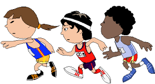

Puzzle 3: Der Leichtathletik-Wettkampf

Drei Leichtathletikvereine aus Bern, Genf und Luzern beteiligen sich an einem Meeting.
Zu jeder Konkurrenz sendet jeder Verein einen Sportler. Ein Reporter R interviewt nachher einen
Zuschauer Z. R: Wer hat gewonnen? Z: Die Berner haben das Kugelstossen gewonnen, aber Genf
gewann das Meeting mit 22 Punkten. Die Berner und Luzerner erzielten je 9 Punkte.
R: Wie wurden die Punkte verteilt? Z: Ich weiss nicht. Der erste erhielt eine Punktzahl, der
zweite eine kleinere und der dritte eine noch kleinere. Die Punkteverteilung war für jede
Konkurrenz gleich. Auch der Letzte erhielt mindestens einen Punkt. R: Wie viele Konkurrenzen
fanden statt? Z: Keine Ahnung. Aber ein Hochsprung hat stattgefunden, das weiss ich.
Wer hat den Hochsprung gewonnen?
Wie ist die genaue Punkteverteilung für jede Konkurrenz?
17. Januar 1997